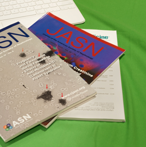

CALCULATORS
These handy calculators help make work tasks easier. Calculate the eGFR, BMI, how much weight to remove during dialysis, etc.
These handy calculators help make work tasks easier. Calculate the eGFR, BMI, how much weight to remove during dialysis, etc.
This page helps navigate many kidney disorders, and quickly selects the PUBMED articles associated with it.

All major journal articles are indexed by the National Library of Medicine. Here, you can select any of your favorite journals and find the latest article.

Having been in practice 45 years I have been asked many questions. Here are some of the answers.
These are some of the books I have been involved with, either writing or editing.

This is my medical biography over a rich life of being involved in health care.